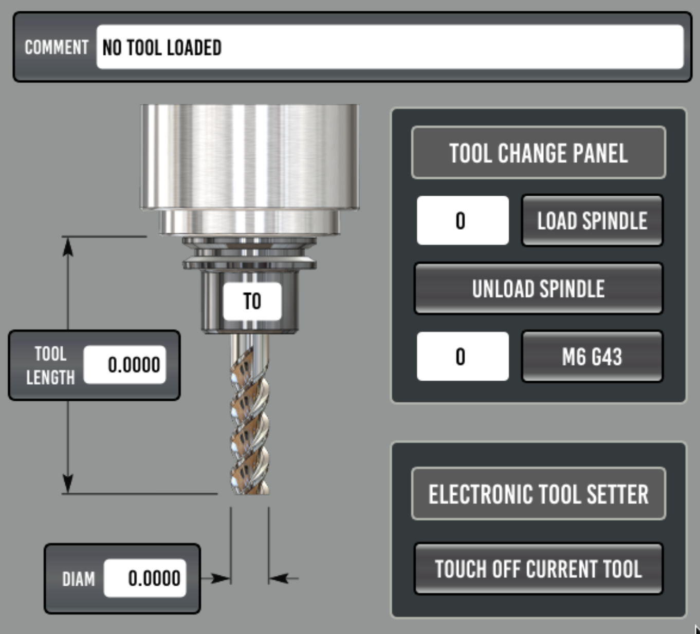

Tool Length Setter
We recently updated the tool touch off page and it is now located under a tab on the main probing tab. there are explanations and visual graphics for better understanding on the tool touch off setup and parameter functions. Be sure to review the updated information/explanation tabs. We also have eliminated the need to use G59.3 as a storing location for the probed coordinates used in the length offset calculation. Below is an image of the new toolsetter page for reference.

Tool Touch Off Position
Important
Tool touch off position (G30), X and Y should be centered on the fixed tool setter platter. Z should always be set to Z Home position Z0.0000
Setting the tool touch off position, jog the machine to the center point of the tool setter platter and indicate it in or probe it with the touch probe to find exact center point.
Next, retract the z axis to the home position Z0.0000
Press the “SET TOOL TOUCH OFF POS” button, this will capture and store the current locating for probing tools from the touch off routine.
Tool Touch Off Parameter Settings
Enter the desired Parameter settings for all parameters:
Spindle Zero
Fast Probe Feedrate
Slow Probe Feedrate
Traverse Feedrate
Z Max Travel
XY Max Travel
Retract distance
Important
Spindle Zero is the length/distance from the empty spindle nose at the Z home Position Z0.0000 to the top of the tool setter (at the trip point) the value for
Spindle Zerocan be measured by probing the top of the setter using the spindle nose itself to find the distance (spindle empty spindle no holder loaded)
Select the if Tool Diameter Offset will be used. This feature will automatically offset the probing position by 1/2 of the tools stored diameter in the tool table. the direction the tool will move in relation to the ToolSetter platter is determined by the Tool Offset Direction Buttons in the parameter setting section. This feature can be useful when measuring tools that are larger than the platter of the tool setter, such as facemills etc.

The Tool Diam Probe button is a place holder only, measuring the diameter of a tool requires a specific type of tool setter capable of measuring in 3 dimensions. We felt it was safer for those wanting this functionality to creating their own probing routine specific to their machine and hardware. In the subroutines folder is in the tool_touch_off.ngc file the parameter is there and passed to be able to turn this on or off. This will allow users to add to the subroutine as needed and have control over that functionality from within the user interface.
With all of the parameters set and the touch off location defined, you are now ready to test your firt tool touch off routine. follow the instruction below to proceed.
Measuring Tools

To measure a tool, Load the tool in the spindle using the tool page in the probe basic interface
Press the “TOUCH OFF CURRENT TOOL” button, this will initiate the tool touch off routine and move the machine to the tool touch off position and probe the tool length to capture and store the current length of the tool in the tool table.